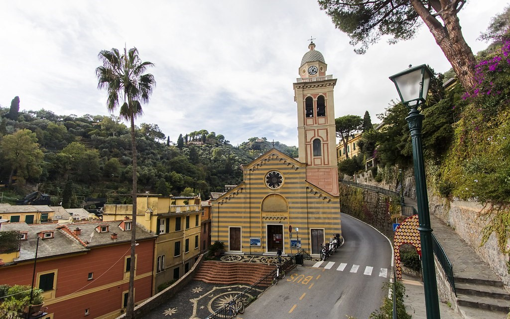

Portofino
Position géographique
Histoire
- Antiquité : Des vestiges archéologiques suggèrent une présence humaine ancienne dans la région, mais Portofino a vraiment émergé en tant que communauté au cours de l'Antiquité romaine.
- Contrôle Maritime : En raison de son emplacement stratégique sur la mer de Ligurie, Portofino a été un site maritime important dès le Moyen Âge. Il était souvent le centre de conflits entre différentes puissances maritimes, y compris les Génois.
- Contrôle Génois : La République de Gênes a exercé un contrôle significatif sur Portofino pendant une grande partie de son histoire. La ville était utilisée à des fins commerciales et militaires par les Génois.
- Développement Maritime : Portofino a prospéré grâce au commerce maritime au fil des siècles. La ville était connue pour sa flotte de pêche et son rôle dans le commerce méditerranéen.
- Architecture et Culture : L'architecture de Portofino reflète son histoire, avec des bâtiments colorés et un charme méditerranéen distinct. La culture locale a été influencée par les échanges avec d'autres régions maritimes.
- Attrait Touristique : Au XXe siècle, Portofino est devenu un lieu de villégiature prisé, attirant des célébrités et des visiteurs fortunés du monde entier. La beauté naturelle du port, les collines environnantes et l'atmosphère pittoresque ont contribué à sa renommée.
- Conservation et Tourisme : Aujourd'hui, Portofino a préservé son charme historique tout en devenant une destination touristique de renommée mondiale. Le tourisme, la pêche et la préservation de l'environnement sont des aspects importants de son identité contemporaine.
Castello Brown
- Emplacement : Castello Brown est perché sur une colline offrant une vue panoramique sur le pittoresque port de Portofino, la mer Méditerranée et les environs. Son emplacement stratégique en fait un point d'observation idéal.
- Histoire : Le château remonte au XVIe siècle, avec des parties de la structure datant du XVe siècle. Son histoire est riche et variée, ayant servi de résidence à diverses familles nobles au fil des siècles.
- Propriétaires Successifs : Castello Brown a été la propriété de la famille Doria, une famille noble italienne, avant d'être acheté par l'anglais Sir Montague Yeats Brown au XIXe siècle. Le château a ensuite été rénové et aménagé par la famille Brown.
- Visites : Aujourd'hui, Castello Brown est ouvert au public et propose des visites guidées. Les visiteurs peuvent explorer les différentes pièces du château, découvrir son histoire et profiter de ses jardins bien entretenus.
- Événements Culturels : Le château est parfois utilisé pour des événements culturels tels que des expositions d'art, des concerts et des manifestations. Ces événements ajoutent à l'attrait culturel du château.
- Jardins : Les jardins qui entourent Castello Brown sont également une caractéristique notable. Ils offrent non seulement une vue imprenable, mais sont également agréables à explorer.
- Attraction Touristique : Castello Brown est l'une des attractions touristiques les plus prisées de Portofino en raison de son histoire, de son architecture et de son emplacement pittoresque.
L’église de San Martino
- Emplacement : L'église de San Martino se trouve au sommet d'une colline surplombant la baie de Portofino, offrant ainsi une vue panoramique sur la mer Ligure et les environs.
- Architecture : L'église est de style roman-gothique et date du XIIe siècle. Elle présente une façade sobre mais élégante, avec des détails architecturaux caractéristiques de l'époque.
- Intérieur : L'intérieur de l'église de San Martino est sobre et élégant, avec des fresques et des œuvres d'art religieux. L'autel principal est dédié à Saint Martin.
- Histoire : L'église a une longue histoire et a probablement été construite à la suite de la croissance de la communauté autour du port de pêche de Portofino au cours du Moyen Âge.
- Célébrations Religieuses : L'église de San Martino continue d'être un lieu de culte actif. Des messes et des célébrations religieuses y ont lieu, attirant les habitants et les visiteurs.
- Accès : Pour atteindre l'église, les visiteurs peuvent emprunter un sentier panoramique qui monte depuis le port de Portofino. La montée offre une occasion de profiter de la vue imprenable sur la ville et la mer.
- Vue Panoramique : L'un des points forts de la visite de l'église de San Martino est la vue panoramique qu'elle offre sur la baie de Portofino. C'est un lieu privilégié pour admirer le paysage côtier spectaculaire.
- Événements Culturels : L'église peut également être le lieu d'événements culturels, y compris des concerts et des expositions, ajoutant une dimension artistique à son rôle dans la communauté.
Portofino est une petite ville côtière située dans la région de Ligurie, dans le nord-ouest de l'Italie.Portofino est renommé pour son port pittoresque, ses maisons colorées, ses collines verdoyantes et son élégance méditerranéenne. Il est situé sur la Riviera italienne, le long de la mer de Ligurie, et est souvent considéré comme l'une des destinations les plus exclusives et charmantes de la côte italienne. La beauté naturelle de Portofino, combinée à son histoire maritime et à son atmosphère détendue, en fait un lieu prisé par les voyageurs du monde entier.
L'histoire de Portofino, une petite ville côtière située dans la région de Ligurie en Italie, remonte à l'Antiquité.
Castello Brown est un château situé dans la ville côtière de Portofino, en Italie. Voici quelques points clés sur Castello Brown :
En résumé, Castello Brown est un château chargé d'histoire, offrant une expérience culturelle et offrant une vue spectaculaire sur la belle région de Portofino en Italie.

L'église de San Martino est une église historique située dans la charmante ville côtière de Portofino, en Italie. Voici quelques informations spécifiques sur l'église de San Martino à Portofino :
L'église de San Martino à Portofino, avec son emplacement pittoresque, son histoire ancienne et son rôle continu dans la vie religieuse de la communauté, constitue une attraction significative pour les visiteurs de la région.
